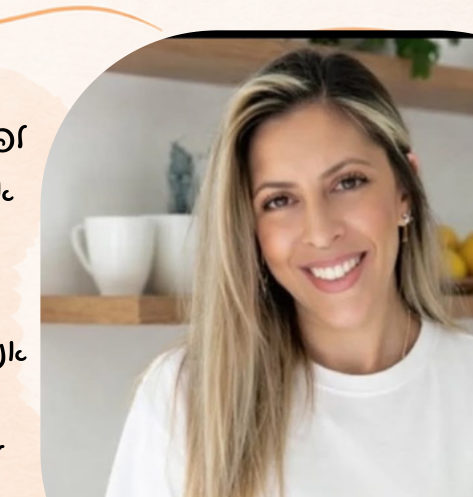

כמה טוב שאת מתכוננת מראש
המדריך יעזור לך להגיע לימים הראשונים בבית עם הבנה של מה מחכה לך ושל מה התינוק צריך. כדאי לקרוא אותו לפי הסדר. ואחרי הלידה, כשהשאלות יתחילו, הוא יחכה לך כאן באותו קישור.
לפרק הראשוןנעים להכיר, אמא
לפני שנתחיל לדבר על שינה, אני רוצה לדבר איתך רגע על ההתחלה.
אולי את עדיין בהריון, מתרגשת ומתכוננת לפגוש את התינוק שלך. ואולי הוא כבר כאן, ואת מגלה שהחיים לצד תינוק קטן מלאים ברגעים מרגשים, אבל גם בשאלות, בעייפות ובחוסר ודאות.
אנחנו מתכוננות ללידה, בוחרות עגלה, מיטה ובגדים קטנטנים. אבל כמה מאיתנו באמת מתכוננות ליום שאחרי? לרגעים שבהם התינוק בוכה ואנחנו לא בטוחות למה, להרדמות שמתארכות, ליקיצות בלילה ולשאלה שעולה שוב ושוב: ״איך אני יודעת מה התינוק שלי צריך?״
אז קודם כול, חשוב לי שתדעי:
את לא אמורה לדעת הכול מהרגע הראשון.

אני רותם סגל, מדריכת הורים ויועצת שינה, גננת ואשת חינוך עם מעל 10 שנות ניסיון, וגם אמא בעצמי.
אני מאמינה שהורות לא מתחילה בשיטות ובכללים, אלא בהיכרות, בהקשבה ובהבנה של הצרכים של התינוק ושל המשפחה כולה.
במדריך הזה אני מזמינה אותך להסתכל על השינה קצת אחרת. לא רק לשאול ״איך מרדימים?״, אלא להתחיל לשאול ״מה התינוק שלי מנסה לספר לי?״
התינוק שלך לומד להכיר את העולם
דמייני לרגע את העולם שהתינוק שלך הכיר עד עכשיו. במשך חודשים הוא היה עטוף, מוגן, בתנועה כמעט מתמדת, מוקף בקולות מוכרים ובתחושת קרבה.
ואז הוא נולד. פתאום יש אור, רעשים, תחושות חדשות, רעב, שינויי טמפרטורה ומרחב שהוא עדיין לא מכיר.
הטרימסטר הרביעי
שלושת החודשים הראשונים לחיים מכונים לעיתים ״הטרימסטר הרביעי״: תקופה של הסתגלות משמעותית, גם עבור התינוק וגם עבור ההורים. בתקופה הזאת התינוק עדיין זקוק לעזרה רבה בוויסות ובהרגעה.
הצורך בקרבה הוא לא הרגל רע.
הוא צורך התפתחותי!
ומה לגבי השינה?
לכן, אם התינוק שלך מתעורר בלילה, זקוק לעזרה בהירדמות או ישן לפרקי זמן קצרים, זה לא בהכרח סימן שמשהו לא בסדר.
המטרה שלנו בתחילת הדרך היא לא לדרוש מהתינוק שינה של מבוגר, אלא להבין את השינה שמתאימה לשלב ההתפתחותי שלו.
כשאת חושבת על השינה של התינוק שלך, מה הכי מעסיק אותך? האם קשה לו להירדם? האם הוא מתעורר לעיתים קרובות? או שאולי את פשוט לא בטוחה מתי הוא עייף?
לפעמים עצם הזיהוי של השאלה הוא הצעד הראשון להבנה.
לא כל בכי הוא עייפות
אחד הדברים הראשונים שאני מלמדת הורים הוא להתבונן בתינוק לפני שממהרים לפעול.
בכי הוא דרך תקשורת, אבל הוא לא מספר לנו בדיוק מה התינוק צריך. תינוק יכול לבכות כי הוא רעב, עייף, מוצף בגירויים, מרגיש אי־נוחות או זקוק לקרבה ולוויסות. וכאן מתחילה ההיכרות שלנו איתו.
איך אפשר לזהות סימני עייפות?
לפעמים התינוק יאותת לנו על עייפות עוד לפני שהוא מתחיל לבכות. סימנים אפשריים:
חשוב לזכור שסימנים אלו אינם ייחודיים לעייפות, ושלא כל התינוקות יראו את אותם הסימנים.
אז מה עושים?
כשהתינוק כבר בוכה בעוצמה ומתקשה להירגע, ייתכן שהוא עייף מאוד, אבל ייתכן גם שיש צורך אחר שטרם קיבל מענה.
במקום להסתכל רק על השעון, נסי לשלב בין שלושה דברים: הזמן שעבר מאז השינה האחרונה, ההתנהגות של התינוק, והצרכים הנוספים שלו.
עם הזמן, ככל שתכירי אותו, יהיה לך קל יותר לזהות דפוסים שחוזרים על עצמם.
בפעם הבאה שהתינוק שלך מתחיל להיות חסר שקט, נסי לשאול את עצמך: מתי הוא ישן לאחרונה? מתי אכל? מה קרה סביבו בדקות האחרונות?
את לא חייבת למצוא מיד את התשובה. את מתחילה ללמוד את השפה שלו.
הרגלי שינה מתחילים הרבה לפני ההרדמה
כשאנחנו מדברות על הרגלי שינה, אנחנו לא מדברות בהכרח על תינוק שנרדם לבד במיטה.
בגיל הרך מאוד, הרגלים מתחילים בדברים קטנים: היכרות, חזרתיות, סביבה מותאמת ומענה לצרכים. אני אוהבת לחשוב עליהם כעל עוגנים קטנים במהלך היום.
שלושה עוגנים שאפשר להתחיל לבנות
1הבחנה עדינה בין יום ולילה
במהלך היום נאפשר אור טבעי, קולות רגילים של הבית ופעילות שמתאימה לגיל. בלילה נעדיף תאורה חלשה, אווירה רגועה ופחות גירויים בזמן ההאכלה והטיפול. כך אנחנו מסייעות בהדרגה להתפתחות ההבחנה בין יום ללילה, בלי לצפות שהתינוק יסתגל מיד.
2רצף מוכר לפני שינה
תינוקות לומדים מתוך חזרתיות. אפשר ליצור רצף קצר שחוזר על עצמו לפני ההרדמה, למשל מעבר לסביבה שקטה, קול מוכר ומגע מרגיע. אין צורך בטקס ארוך או בשעה קבועה כבר מהלידה.
3התאמה ולא נוקשות
יש ימים שבהם התינוק יזדקק ליותר קרבה, יהיו יותר יקיצות או שההרדמה תהיה ממושכת יותר. וזה בסדר. הרגלי שינה נבנים לאורך זמן, ולא מתוך ניסיון לשלוט בכל שינה ושינה.
העוגנים מעניקים כיוון.
התינוק שלך מלמד אותך את הקצב.
שלושה כלים קטנים שאפשר לנסות כבר היום
אני רוצה שתצאי מהמדריך הזה לא רק עם ידע, אלא גם עם משהו שתוכלי לקחת איתך לרגעי ההרדמה.
1רגע של התבוננות
לפני שאת מתחילה להרדים, עצרי לרגע. הסתכלי על התינוק שלך ונסי לזהות אם הוא מראה סימני עייפות, רעב, צורך בקרבה או אי־נוחות. לפעמים שינוי קטן באופן שבו אנחנו מפרשות את ההתנהגות שלו משנה גם את הדרך שבה אנחנו מגיבות.
2הכנה קצרה לשינה
בחרי רצף קצר ונעים שמתאים לתינוק שלך. לדוגמה: הפחתת גירויים, מעבר למקום רגוע, משפט מוכר כמו ״אתה עייף, עכשיו ננוח״, וקול שקט שחוזר על עצמו. עם הזמן, החזרתיות יכולה לעזור לתינוק להכיר את המעבר מפעילות למנוחה.
3מגע, קול ותנועה
תינוקות רבים נעזרים במגע, בקול מוכר ובתנועה עדינה כדי להירגע. אפשר להחזיק את התינוק קרוב, להשמיע קול רגוע או לנוע איתו בעדינות, תוך שמירה על תמיכה מתאימה בראש ובצוואר. התבונני בתגובה שלו: האם הגוף שלו מתרפה? האם הוא נרגע? אם הוא מראה סימני מצוקה, עוצרים ובודקים מחדש את הצורך.
חשוב לשינה בטוחההרגעה על הידיים יכולה להיות נעימה ומועילה, אך לשינה עצמה יש להשכיב את התינוק על הגב, במיטה או בעריסה תקנית, על מזרן שטוח וקשיח, ללא כריות, בובות, מגיני ראש או מצעים רופפים. אין להשאיר תינוק לישון על ספה, בכורסה או על אדם שעלול להירדם.
איזה מהכלים עזר לתינוק שלך להירגע? ומה קרה כשניסית אותו בזמן אחר?
לא תמיד נקבל את אותה תגובה, וזה חלק מתהליך ההיכרות.
ומה אם זה עדיין לא עובד?
אולי ניסית לזהות סימני עייפות, להפחית גירויים וליצור רגעים רגועים לפני השינה, ובכל זאת ההרדמות עדיין מאתגרות.
אני רוצה להזכיר לך משהו חשוב:
לא כל בכי הוא עייפות, לא כל יקיצה היא בעיה,
ולא כל תינוק זקוק לאותו פתרון.
הכלים שקיבלת במדריך הם התחלה, אבל לפעמים כדי להבין את הקושי צריך להסתכל על התמונה הרחבה: הגיל, ההתפתחות, האכילה, השינה והצרכים של המשפחה כולה.
ולפעמים, שינוי קטן ומדויק יכול לעשות הבדל גדול.
ועכשיו, בואי נדבר על התינוק שלך
בהדרכה האישית שלי אנחנו לומדים להכיר את התינוק שלך, להבין מה הוא צריך ולבנות יחד כלים והרגלים שמתאימים לו ולכם.
ואת לא צריכה לחכות עד שהשינה תהפוך לקושי. אפשר ללמוד, להבין ולבנות ביטחון הורי כבר מההתחלה.
למשתתפות בייבילנד: שיחת היכרות של 15 דקות,
בלי עלות ובלי התחייבות.
אני כאן גם בהמשך הדרך
כי ההורות משתנה, ואנחנו גדלים יחד איתה.
היום את אולי מחפשת תשובות על שינה, אבל בהמשך הדרך יגיעו עוד שאלות, עוד התרגשויות ועוד אתגרים.
אני רותם סגל
מדריכת הורים הוליסטית, יועצת שינה, גננת ואשת חינוך עם מעל 10 שנות ניסיון. אני מלווה הורים החל מההכנה להורות ולאורך שנות הגיל הרך, מתוך אמונה שאין דרך אחת שמתאימה לכל משפחה.
איך אני יכולה ללוות אתכם?
הכנה להורות, הטרימסטר הרביעי, הבנת צורכי התינוק ובניית ביטחון הורי.
הבנת השינה בגיל הרך, התמודדות עם אתגרי הרדמה ויקיצות ובניית הרגלים מותאמים.
ליווי בצעדים הראשונים בעולם האכילה, היכרות עם מזונות חדשים ועידוד חוויית אכילה חיובית.
זיהוי מוכנות, ליווי התהליך והתמודדות עם חששות וקשיים בדרך.
התקפי זעם, התמודדות עם תסכולים, שיתוף פעולה, עצמאות ובניית סמכות הורית מיטיבה.
הכנה להולדת אח או אחות, הסתגלות לשינויים בבית וחיזוק הקשר המשפחתי.
לכל שלב בהורות יש את האתגרים שלו.
ואתם לא צריכים לעבור אותם לבד.
אשמח להכיר אתכם, לשמוע על המשפחה שלכם ולחשוב יחד איך אפשר להקל, לדייק ולהאיר את הדרך.
למשתתפות בייבילנד: שיחת היכרות של 15 דקות, בלי עלות ובלי התחייבות.
שליחת הודעה בוואטסאפ 052-4700409